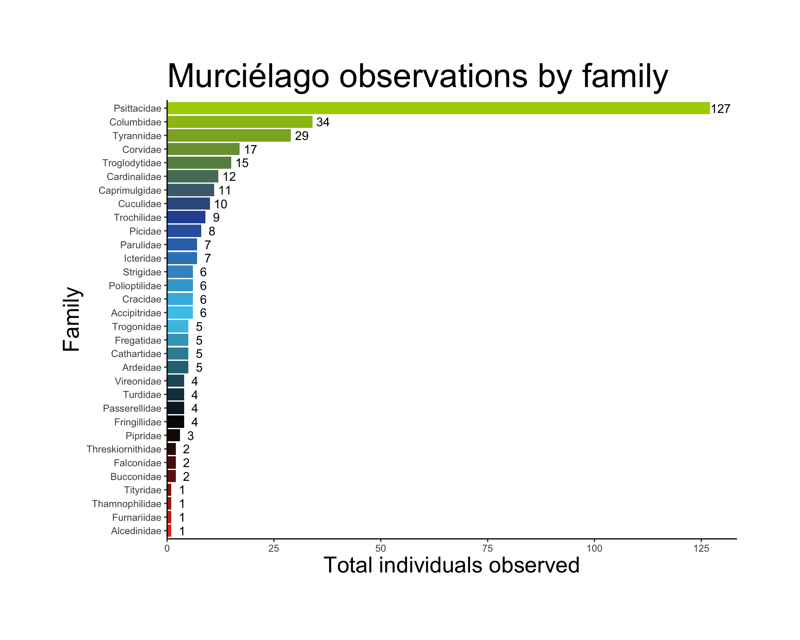
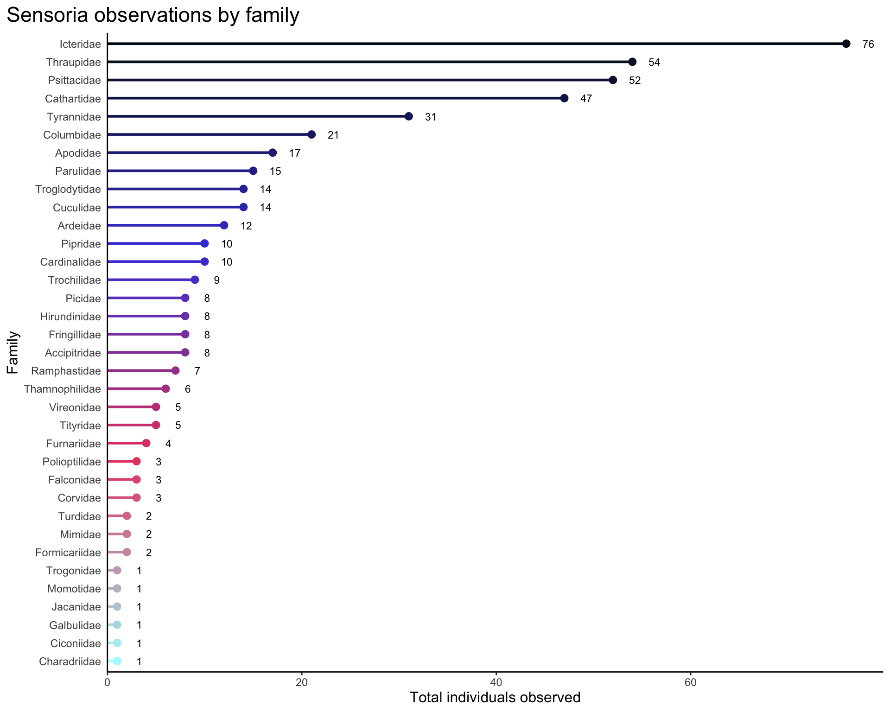
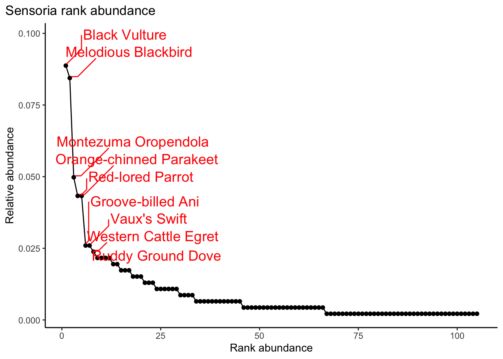

library(tidyverse) # general manipulation
library(here) # organizing directories
library(janitor) # cleaning column names
library(readxl) # using the xlsx file
library(tanagR) # color palettes inspired by members of the Thraupidae family
library(ggrepel)2023 CBC data processing
1. Description
This is copied from the 2022 pipeline.
2. Libraries, data, function
These are the data files that are useful to have.
# taxon info from NACC to organize final tallies by family
taxon_nacc <- read_csv(here::here("data", "species-lists", "NACC_list_species_2022-01-29.csv")) %>%
# changing common names for 2023
mutate(common_name = case_when(
common_name == "Yellow-olive Flycatcher" ~ "Yellow-olive Flatbill",
common_name == "Cattle Egret" ~ "Western Cattle Egret",
common_name == "Olive-striped Flycatcher" ~ "Olive-streaked Flycatcher",
common_name == "Grayish Saltator" ~ "Cinnamon-bellied Saltator",
TRUE ~ common_name
)) %>%
# caracara split: using Caracara plancus
filter(species != "Caracara cheriway")
family_levels <- taxon_nacc %>%
select(family) %>%
unique() %>%
mutate(family = fct_inorder(family)) %>%
pull(family)
# data from Murcielago
murci <- read_xlsx(here::here("data", "data-entry", "CRSR_CBC_2023_Murcielago_data_entry.xlsx"), sheet = "datos") %>%
clean_names() %>%
# attach taxonomic info
left_join(., taxon_nacc, by = c("especie" = "common_name"))
# data from Sensoria-Buenos Aires route
sensoria <- read_xlsx(here::here("data", "data-entry", "CRCA_CBC_2023_Sensoria_data_entry.xlsx"), sheet = "datos") %>%
clean_names() %>%
left_join(., taxon_nacc, by = c("especie" = "common_name"))This is the function to summarize individual counts by species and sort species by family. This depends on the species column being named “especie” and the individual count column being named “numero”.
count_function <- function(df) {
# find columns in data frame called "especie" and "numero"
test <- str_subset(colnames(df), "especie|numero")
# if else statement
# if columns from data frame are actually "especie" and "numero", do the summary
if(identical(test, c("especie", "numero"))) {
df %>%
group_by(especie) %>%
summarize(sum_ind = sum(numero)) %>%
ungroup() %>%
# attach taxonomic info
left_join(., taxon_nacc, by = c("especie" = "common_name")) %>%
arrange(factor(family, levels = family_levels)) %>%
select(especie, sum_ind)
# else throw an error
} else {
warning("Whoops! You might be missing columns 'especie' and 'numero'. Double check your data frame!")
}
}3. Murcielago data
murci_spp <- unique(murci$especie) %>%
length()
murci_tally <- count_function(murci)
head(murci_tally)# A tibble: 6 × 2
especie sum_ind
<chr> <dbl>
1 Crested Guan 2
2 Great Curassow 4
3 Inca Dove 8
4 Red-billed Pigeon 5
5 White-tipped Dove 7
6 White-winged Dove 14# write_csv(murci_tally, here::here("tallies", "murci-2023.csv"))4. Sensoria data
sensoria_spp <- unique(sensoria$especie) %>%
length()
# 105 species
sensoria_tally <- count_function(sensoria)
head(sensoria_tally)# A tibble: 6 × 2
especie sum_ind
<chr> <dbl>
1 Inca Dove 2
2 Ruddy Ground Dove 10
3 White-tipped Dove 2
4 White-winged Dove 7
5 Groove-billed Ani 12
6 Squirrel Cuckoo 2# write_csv(sensoria_tally, here::here("tallies", "sensoria-2023.csv"))5. Post-processing in Excel
The spreadsheet to report route data to compilers has a column to enter count numbers. I exported tally results into .csv files, then copied those into different sheets in the reporting spreadsheet. I turned that data into a table (Control + T) then used VLOOKUP to automatically fill in counts in the main sheet count column. The general formula for this is =VLOOKUP([cell with common name], [cells with table], 2, FALSE). One example is from the Murcielago total: =VLOOKUP(C185, 'murci-2023'!A$2:B$63, 2, FALSE).
6. Observations by family
family_summary <- function(df) {
df %>%
group_by(family) %>%
# summarizing observations by family
group_by(family) %>%
summarize(sum_obs = sum(numero)) %>%
ungroup() %>%
# set the factor levels to be in descending order by sum_obs
arrange(sum_obs) %>%
mutate(family = fct_inorder(family))
}
murci_families <- family_summary(murci)
sensoria_families <- family_summary(sensoria)
family_plot <- function(df) {
ggplot(df, aes(x = sum_obs, y = family)) +
geom_segment(aes(x = 0, xend = sum_obs, yend = family, color = family), size = 1) +
geom_point(aes(color = family), size = 2.5) +
geom_text(aes(label = sum_obs), nudge_x = max(df$sum_obs*0.03), size = 3) +
scale_x_continuous(expand = c(0, 0), limits = c(0, max(df$sum_obs*1.05))) +
labs(x = "Total individuals observed", y = "Family") +
theme_classic() +
theme(legend.position = "none",
axis.title = element_text(size = 12),
title = element_text(size = 14),
axis.ticks.y = element_blank(),
plot.title.position = "plot")
}
murci_family_plot <- family_plot(murci_families) +
# use the Tangara chilensis color palette
scale_color_manual(values = tanagr_palette("tangara_chilensis", n = 32, discrete = FALSE)) +
labs(title = "Murciélago observations by family")Warning: Using `size` aesthetic for lines was deprecated in ggplot2 3.4.0.
ℹ Please use `linewidth` instead.murci_family_plot
sensoria_family_plot <- family_plot(sensoria_families) +
# use the Cyanerpes cyaneus color palette
scale_color_manual(values = tanagr_palette("cyanerpes_cyaneus", n = 35, discrete = FALSE)) +
labs(title = "Sensoria observations by family")
sensoria_family_plot 
7. Rank abundance
# function to calculate rank abundance
rank_abundance_fxn <- function(df) {
df %>%
# calculate proportion of observations per species
mutate(rel_abund = sum_ind/sum(sum_ind)) %>%
# create a new column for rank
arrange(-rel_abund) %>%
mutate(rank = seq(from = 1, to = length(sum_ind), by = 1)) %>%
# create a column for labelling
mutate(label = case_when(
rank < 11 ~ "yes",
TRUE ~ "no"
))
}
murci_rank <- rank_abundance_fxn(murci_tally)
sensoria_rank <- rank_abundance_fxn(sensoria_tally)
# function to plot rank abundance
rank_abundance_plot <- function(df) {
df %>%
ggplot(aes(x = rank, y = rel_abund)) +
geom_line() +
geom_point() +
geom_text_repel(data = df %>% filter(rank < 10),
aes(label = especie),
segment.curvature = -1e-20, point.padding = 0.2,
force_pull = 0.1, direction = "y",
nudge_x = 15, nudge_y = 0.01,
size = 5, col = "red") +
labs(x = "Rank abundance", y = "Relative abundance") +
theme_classic() +
theme(plot.title.position = "plot")
}
rank_abundance_plot(murci_rank) +
labs(title = "Murciélago rank abundance")
rank_abundance_plot(sensoria_rank) +
labs(title = "Sensoria rank abundance")